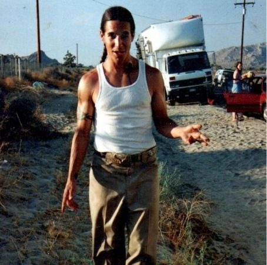

Anthony Kiedis

Nació el 1 de noviembre de 1962 en Grand Rapids, Míchigan, hijo de John «Blackie Dammet» Kiedis y
Margaret «Peggy» Noble.
Estudió en Fairfax High School donde conoció a Hillel Slovak, Flea y más tarde a Jack Irons. Contó
que antes de ser amigo de Flea tuvieron un enfrentamiento, y dijo sobre ello: «Fuimos unidos por las
fuerzas del dolor y el amor, nos hicimos virtualmente inseparables. Ambos éramos parias sociales,
nos encontramos uno al otro y esto se convirtió en la amistad más duradera de toda mi vida». En
1976, Anthony fue matriculado en una escuela para niños actores con Diane Hull, y llegó a participar
bajo el apodo de Cole Dammett en una serie cómica para la televisión llamada Jokes That My Folks
Never Told Me haciendo el papel del alumno problemático y rebelde de la clase, algo que no estaba
alejado de su precoz vida real.
Leer más
Tanto fue así que fue llamado para hacer el papel de uno de los hijos del mismo Sylvester
Stallone en su película F.I.S.T. Gracias a los turbios negocios de su padre actor-dealer,
pudo conocer los clubes del Sunset Strip a pesar de su edad y presenciar las bandas que formaron
la escena Punk Rock de Los Ángeles como The Germs, The Weirdos, Circle Jerks entre otras. Para
1979 estuvo sirviendo de presentador para las actuaciones de la banda de sus amigos de
secundaria Anthym. No fue hasta principios de 1983 cuando se juntó con tres amigos y miembros de
Anthym y fundó su grupo llamado por aquel entonces Tony Flow & The Miraculously Majestic Masters
of Mayhem para servir de acto de apertura a su amigo Gary Allen y su banda The Neighbours
Voices, para lo que compusieron su propia música bajo la fuerte inspiración de una banda
neoyorquina de funk con energía punk llamada Defunkt. Estos compañeros eran: Michael Balzary
—conocido como Flea— en el bajo, quien aún pertenece al grupo, el batería Jack Irons y su
excompañero Hillel Slovak —fallecido por una sobredosis de heroína el 25 de junio de 1988—. Ya
para su segundo show habían cambiado su nombre al actual. Cursó estudios universitarios en la
Universidad de California en Los Ángeles. Mientras estudiaba en Fairfax su profesora de inglés
(Mrs. Vernon) le animó a escribir poesía, muchas de las cuales se convertirían después en
canciones.

El estilo de cantar de Kiedis fue cambiando drásticamente según pasaban los años. Aprendió a
controlar su voz cada vez más en cada álbum. Después de oír y ver a Grandmaster Flash & The
Furious Five, empezó siendo el vocalista de la banda rapeando, estilo que lo podía hacer a
velocidades extremas manteniendo aun así un ritmo consistente. A partir de Mother's Milk —cuarto
disco de la banda lanzado en 1989—, Anthony escribió canciones para la banda con más melodía que
la que venía haciendo de ritmos básicos y con un estilo funk y hip hop. En Blood Sugar Sex Magik
—quinto disco lanzado en 1991— todavía se escucha a Anthony rapear, pero comienza cantando sus
primeras baladas más melódicas en canciones como Under the Bridge, Breaking the Girl y I Could
Have Lied. Conforme a los años, Kiedis prefirió sin duda el canto al rapeo. Muchos críticos
están de acuerdo en opinar que su voz ha mejorado mucho y que quizás su máxima expresión la haya
tomado en el álbum Stadium Arcadium —noveno disco, lanzado en 2006—.
Además trabajó como actor de reparto en la película Point Break la versión original del año
1991. Así como en la película de 1994 The Chase, protagonizada por Charlie Sheen.
Flea
Sus trabajos con el grupo incluyen multitud de estilos, desde un slap agresivo hasta técnicas más
melódicas. Además de sus trabajos con Red Hot Chili Peppers, ha colaborado con multitud de artistas,
como Metallica, Nirvana, Jane's Addiction, Rage Against the Machine, The Mars Volta, Mick Jagger,
Alanis Morissette y Slash, y participado en la serie de conciertos Axis of Justice junto a Serj
Tankian y Tom Morello, entre muchos otros. Debido a sus influencias en el funk y el punk rock, Flea
se centra en técnicas simplistas y minimalistas, aunadas con toques de complejidad que deben ser
usados con moderación.
Leer más
En sus comienzos fue considerado un prodigio de la trompeta, pero en el instituto aprendió a
tocar el bajo de la mano de un amigo y futuro miembro fundador de Red Hot Chili Peppers, Hillel
Slovak, quien necesitaba un bajista para su grupo Anthym (posteriormente conocido como What Is
This?). Flea se unió al grupo, pero lo dejó unos meses más tarde para poder tocar con el grupo
punk rock Fear. Más adelante volvió a unirse al grupo de Slovak, aliados esta vez con Anthony
Kiedis y Jack Irons; de esta unión nacieron los Red Hot Chili Peppers.
Flea ha participado a su vez en filmes de diversos géneros, como las películas Suburbia (1983),
Back to the Future Part II (1989), Back to the Future Part III (1990), Mi Idaho privado (1991,
junto a su amigo River Phoenix) y El gran Lebowski (1998), así como también la serie de Disney+
Obi-Wan Kenobi (2022). Fue clasificado por la revista Rolling Stone en el puesto número 2 de Los
10 mejores bajistas de la historia. También es miembro del supergrupo Atoms for Peace.
Chad Smith
Grabó 10 álbumes de estudio y de la cual es miembro desde 1988 hasta la actualidad. Smith también es
el baterista de la banda de hard rock Chickenfoot y de la banda instrumental Chad Smith's
Bombastic Meatbats. Además, ha colaborado con numerosos artistas como John Frusciante, Glenn
Hughes, Jake Bugg, Dave Navarro, Dixie Chicks y Johnny Cash, entre otros.
Leer más
A lo largo de su carrera, Smith ha recibido diversos reconocimientos. Los lectores de la revista
Rolling Stone votaron a Chad como el 13.º mejor baterista de rock de la historia. Además, la
revista Spin situó a Chad en el puesto número 10 en la lista de "Los 100 Mejores Bateristas de
Música Alternativa". Por otra parte, está en el puesto número 6 en la lista de los "50 Mejores
Bateristas de Todos los Tiempos", como así también en el puesto número 10 en la lista de "Los
20 Mejores Bateristas de los Últimos 25 Años", ambas listas publicadas por la revista Rhythm.
Chad también fue nombrado por la revista DRUM! Magazine como "Baterista Funk del Año" en un
total de 12 años. En 2012, Chad fue incluido en el Salón de la Fama del Rock, como miembro de
Red Hot Chili Peppers.
Aunque principalmente es conocido por su trabajo como baterista de Red Hot Chili Peppers, Smith
se destaca en más de cien álbumes, sin incluir aquellos grabados con su actual banda. También ha
viajado mucho por el mundo, ya que realiza encuentros de bateristas. Concurrió a una serie de
encuentros con uno de sus héroes, Ian Paice de Deep Purple. Chad desarrolla un proyecto paralelo
llamado "Chickenfoot" con los antiguos miembros de Van Halen, Sammy Hagar y Michael Anthony y
con el famoso guitarrista Joe Satriani.
John Frusciante

Ha grabado siete álbumes de estudio en los períodos 1988-1992, 1998-2009 y 2019-presente. También
tiene una larga carrera solista activa, habiendo lanzado doce álbumes y 5 EP en solitario; sus
grabaciones incluyen elementos que van desde el rock experimental y ambient, hasta New Wave y música
electrónica.
Leer más
Frusciante se unió a Red Hot Chili Peppers en 1988 al sustituir al guitarrista Hillel Slovak,
quien acababa de fallecer por sobredosis de drogas. Su primera aparición fue en el álbum de 1989
Mother's Milk, para después grabar el clásico Blood Sugar Sex Magik, que se convirtió en un
éxito. La repentina fama y las constantes giras hicieron que Frusciante abandonase la formación
en 1992, y se recluyese en su casa para volverse adicto a la heroína y grabar una serie de
discos en solitario. En 1998 el guitarrista completó con éxito un proceso de rehabilitación que
le permitió regresar a los Red Hot Chili Peppers el mismo año y grabar con ellos los discos
Californication (1999), By the Way (2002) y Stadium Arcadium (2006). Permaneció como miembro
estable de la formación hasta 2009, año en el que decide abandonarla nuevamente para centrarse
en su carrera en solitario. Una década después, en diciembre de 2019, fue anunciado su retorno
al grupo tras la salida de Josh Klinghoffer, quien lo había reemplazado tras su segunda salida
de la banda.
Fue elegido por la revista Rolling Stone en el puesto número 72 de la Lista de los 100
guitarristas más grandes de todos los tiempos, y según la encuesta "The Axe Factor" producida
por la cadena BBC de Inglaterra ha sido nombrado el mejor guitarrista de los últimos 30 años.